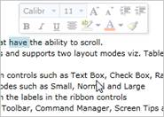
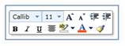
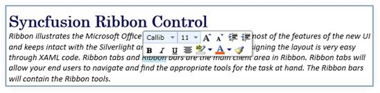

The Ribbon instance ships with built-in MiniToolbar. The MiniToolbar facilitates the users to perform most of the formatting operations easily.
The MiniToolbar class exposes the following members:
1.1.1.1.1.1.48 Properties
|
Name |
Type |
Value it accepts |
Description |
Default Value |
Reference Link |
|
Range |
Double |
double |
Used to hide the Mini toolbar when crossing the distance of the Range value and it shows again if the cursor comes in the range value. |
40.00 |
|
|
HorizontalOffset |
Double |
double |
The horizontal distance between the target origin and the mini toolbar's popup alignment point. |
0.00 |
|
|
VerticalOffset |
Double |
double |
The vertical distance between the target origin and the mini toolbar's popup alignment point. |
0.00 |
|
|
Target |
UIElement |
UIElement |
Used to set the target for the Mini toolbar |
null |
|
|
IsOpen |
Boolean |
True or False |
Used to Show / Hide Mini Toolbar |
false |
1.1.1.1.1.1.49 Events
|
Name |
Event Type |
Event Args Parameter |
Description |
Reference Link |
|
RangeChanged |
PropertyChangedCallback |
DependencyPropertyChangedEventArgs |
Occurs when Range changes |
|
|
HorizontalOffsetChanged |
PropertyChangedCallback |
DependencyPropertyChangedEventArgs |
Occurs when Horizontal Offset changs |
|
|
VerticalOffsetChanged |
PropertyChangedCallback |
DependencyPropertyChangedEventArgs |
Occurs when Vertical Offset changes |
|
|
TargetChanged |
PropertyChangedCallback |
DependencyPropertyChangedEventArgs |
Occurs when Target UIElement changes |
|
|
IsOpenedChanged |
PropertyChangedCallback |
DependencyPropertyChangedEventArgs |
Occurs when IsOpen property changes |
1.1.1.1.1.1.49.1 RangeChanged
The Event raises when the range valuechanges.
|
XAML
<syncfusion:MiniToolbar x:Name="mtbar" RangeChanged="mtbar_RangeChanged" /> |
|
C#
MiniToolbar mtbar = new MiniToolbar();
private void mtbar_RangeChanged(DependencyObject d, DependencyPropertyChangedEventArgs e) |
1.1.1.1.1.1.49.2 HorizontalOffsetChanged
The Event rises when the HorizontalOffsetChanged valuechanges.
|
XAML
<syncfusion:MiniToolbar x:Name="mtbar" HorizontalOffsetChanged="mtlbar_HorizontalOffsetChanged" /> |
|
C#
MiniToolbar mtbar = new MiniToolbar(); );
private void mtlbar_HorizontalOffsetChanged(DependencyObject d, DependencyPropertyChangedEventArgs e) |
1.1.1.1.1.1.49.3 VerticalOffsetChanged
The Event rises when the VerticalOffsetChanged value changes.
|
XAML
<syncfusion:MiniToolbar x:Name="mtbar" VerticalOffsetChanged="mtlbar_VerticalOffsetChanged" /> |
|
C#
MiniToolbar mtbar = new MiniToolbar(); );
private void mtlbar_VerticalOffsetChanged(DependencyObject d, DependencyPropertyChangedEventArgs e) |
1.1.1.1.1.1.49.4 TargetChanged
The event raises when TargetChangedchanges.
|
XAML
<syncfusion:MiniToolbar x:Name="mtbar" TargetChanged="mtlbar_TargetChanged" /> |
|
C#
MiniToolbar mtbar = new MiniToolbar();
private void mtlbar_TargetChanged(DependencyObject d, DependencyPropertyChangedEventArgs e) |
1.1.1.1.1.1.49.5 IsOpenedChanged
The event raises when IsOpenedChangedchanges.
|
XAML
<syncfusion:MiniToolbar x:Name="mtbar" IsOpenedChanged ="mtlbar_IsOpenedChanged" /> |
|
C#
MiniToolbar mtbar = new MiniToolbar(); );
private void mtlbar_IsOpenedChanged(DependencyObject d, DependencyPropertyChangedEventArgs e) |
Namespace: Syncfusion.Windows.Tools.Controls
Assembly: Syncfusion.Ribbon.Silverlight
1.1.1.1.1.1.50 Set Range
|
XAML
<syncfusion:MiniToolbar x:Name="minitoolbar" Range="90" /> |

Figure 607: Range value set for mini toolbar
1.1.1.1.1.1.51 Show Mini Toobar
The following code describes the implementation:
|
XAML
<syncfusion:MiniToolbar x:Name="minitoolbar" Range="90" Background="White" BorderBrush="Gray" BorderThickness="1"> <StackPanel> <StackPanel Orientation="Horizontal"> <syncfusion:RibbonComboBox Width="59" Name="r_Combo" SelectedIndex="0"> <ComboBoxItem Content="Calibri(Body)" Padding="0" HorizontalAlignment="Left"/> <ComboBoxItem Content="Tahoma" Padding="0" HorizontalAlignment="Left"/> <ComboBoxItem Content="Arial" Padding="0" HorizontalAlignment="Left"/> <ComboBoxItem Content="Arial Narrow" Padding="0" HorizontalAlignment="Left"/> <ComboBoxItem Content="Arial Black" Padding="0" HorizontalAlignment="Left"/> </syncfusion:RibbonComboBox> <syncfusion:RibbonComboBox Width="40" Name="r_combo"/> <syncfusion:RibbonButton SizeMode ="Small" SmallIcon="/RibbonSample_2010;component/Images/FontSizeInc.png"/> <syncfusion:RibbonButton SizeMode ="Small" SmallIcon="/RibbonSample_2010;component/Images/FontSizeDec.png"/> <syncfusion:RibbonButton SizeMode ="Small" SmallIcon="/RibbonSample_2010;component/Images/IncreaseIndent16.png"/> <syncfusion:RibbonButton SizeMode ="Small" SmallIcon="/RibbonSample_2010;component/Images/DecreaseIndent16.png"/> </StackPanel> <StackPanel Orientation="Horizontal"> <syncfusion:RibbonButton SizeMode ="Small" IsCheckable="True" SmallIcon="/RibbonSample_2010;component/Images/Bold16.png"/> <syncfusion:RibbonButton SizeMode ="Small" IsCheckable="True" SmallIcon="/RibbonSample_2010;component/Images/Italic16.png"/> <syncfusion:RibbonButton SizeMode ="Small" IsCheckable="True" SmallIcon="/RibbonSample_2010;component/Images/Underline16.png"/> <syncfusion:RibbonButton SizeMode ="Small" SmallIcon="/RibbonSample_2010;component/Images/AlignTextCenter16.png"/> <syncfusion:RibbonSplitButton SizeMode ="Small" SmallIcon="/RibbonSample_2010;component/Images/TextHighlightColor16.png"/> <syncfusion:RibbonSplitButton SizeMode ="Small" SmallIcon="/RibbonSample_2010;component/Images/FontColor16.png"/> <syncfusion:RibbonButton SizeMode ="Small" SmallIcon="/RibbonSample_2010;component/Images/FormatPainter16.png"/> </StackPanel> </StackPanel> </syncfusion:MiniToolbar> |

Figure 608: Mini Toolbar
 Note: The horizontal offset and vertical
offset property decides where the mini toolbar to display. Usually in Office
Applications the mini toolbar showed when the text in the Editor selected. The
scenario can be implemented as follows.
Note: The horizontal offset and vertical
offset property decides where the mini toolbar to display. Usually in Office
Applications the mini toolbar showed when the text in the Editor selected. The
scenario can be implemented as follows.
|
C#
Private void Editor_MouseMove(object sender, MouseEventArgs e) { _mousepos = e.GetPosition(Editor); if (Editor.Selection.Text.Length == 0) { minitoolbar.IsOpen = false; } }
Private void Editor_SelectionChanged(object sender, RoutedEventArgs e) { if (minitoolbar != null) { minitoolbar.Target = Editor; minitoolbar.HorizontalOffset = _mousepos.X; minitoolbar.VerticalOffset = _mousepos.Y; minitoolbar.IsOpen = true; } } |
The output will be as follows:

Figure 609: Mini Toolbar